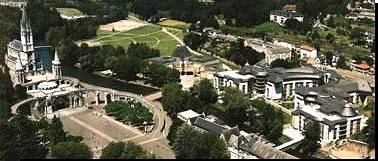
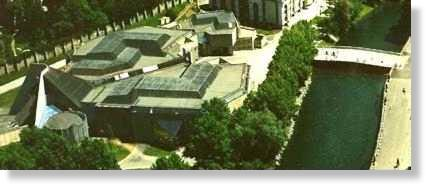
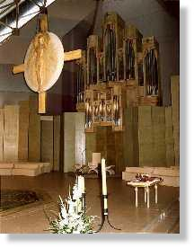
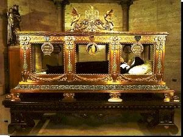
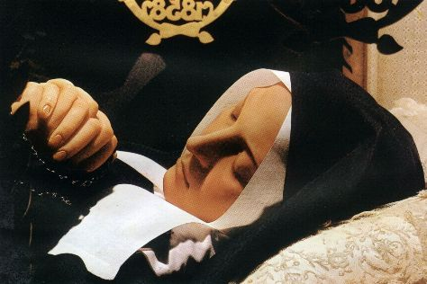
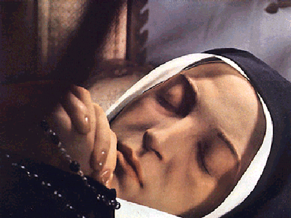
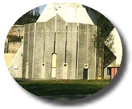
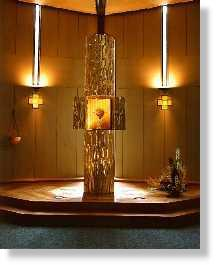

INGRESSA NO
CONVENTO
 - Do dia 16 de junho de 1858, data da
última Aparição de Nossa Senhora, até junho de
- Do dia 16 de junho de 1858, data da
última Aparição de Nossa Senhora, até junho de 
1866, quando iniciou
sua viagem para entrar no Convento de Saint Gildard em Nevers,
conviveu com as Irmãs do Hospício, na sua cidade, frequentou a
escola onde adquiriu um pouco de instrução e exercitou um
profícuo apostolado junto aos doentes internos.
Mas foi também um período difícil
de sua vida, porque era solicitada e importunada em todos os momentos,
por curiosos, por pessoas que queriam o seu autógrafo, que
queriam vê-la, e desejavam tocar-lhe ou fazer-lhe perguntas.
Foi assediada por diversas
Ordens Religiosas que a queriam e assim, forçavam para que ela
entrasse em sua Comunidade. Mas inicialmente, preferiu continuar
ao lado de seus pais e irmãos, porque havia outros problemas que
interferia e dificultava a sua decisão: a asma crônica, a pobreza que
não lhe permitia ter um dote e a falta de instrução. Com o passar
do tempo e o sempre crescente número de visitantes, fizeram com
que ela sentisse a necessidade de isolar-se, para poder trabalhar e
ser útil de alguma forma, não ficando apenas como um objeto
de admiração pública. Por esse motivo começou a pensar
seriamente em ingressar num Convento.
Com o passar dos meses amadureceu
a sua vontade e escreveu para Nevers pedindo autorização para entrar no
Convento. A resposta veio positiva.
Em 7 de julho de 1866, às 22 horas
e 30 minutos, desembarcava na estação ferroviária de Nevers,
acompanhada de mais duas postulantes, Maria e Leontina,
e de duas Superioras da Comunidade.
No dia 8 de dezembro teve
uma grande tristeza com a noticia da morte de sua mãe Luisa 
com 41 anos de idade.
Bernadete encontrou em sua vida
de Convento as dificuldades naturais que o ciúme pode causar a algumas
pessoas , por ter sido ela a preferida da Virgem Mãe, apesar de
ser tão modesta, simples e sem qualquer instrução.
E por isso, foi com muito sofrimento
e com um imenso amor ao próximo, assim como um perseverante espírito
de disciplina e de obediência inigualáveis, que conseguiu superar todos os
momentos difíceis.
Respeitosamente acatava as decisões
e as ordens das Superioras, mesmo que ás vezes elas denotassem um excesso
de rigor ou que fossem na maioria das ocasiões, ofensivas. Ela
aceitava e acolhia todas as ordens sem discuti-las, com um singelo
sorriso de humildade e agradecimento.
No dia 30 de Outubro de 1867 fez a
sua "Profissão de Fé"
. Sua voz era firme e sem
afetação. Comprometeu-se por toda a vida, praticar a pobreza, a
castidade, obediência e a caridade.
Escolheram para ela o emprego da Oração
e auxiliar na Enfermaria da Casa Mãe.
No dia 4 de março de 1871
recebeu um telegrama que trazia a notícia da morte de seu pai. Chorou
muito, com imensas saudades dele. Dias depois escreveu à Maria
sua irmã:
"Venho chorar
contigo. Fiquemos no entanto submissas, embora bem desgostosas, à mão
paternal que nos bate tão duramente há algum tempo. Levemos e
beijemos a Cruz".
Com a morte da Enfermeira Chefe
Irmã Marta a 8 de Dezembro de 1872, por iniciativa própria, assumiu a
responsabilidade da Enfermaria, sem nomeação das Superioras,
tomando sobre si todas as tarefas e atribuições da função. É
assim que organizou a Enfermaria, colocou rótulos nos produtos
relacionou as diversas poções, escreveu as formulas, tudo com
capricho e interesse. E também, com invulgar disposição dispensava
atenção e carinho a todas as irmãs que necessitavam de seus serviços.
A 3 de junho de 1873 sua saúde não
vai bem, tem uma recaída muito séria. Ninguém duvida de que vai morrer.

Recebe a Extrema Unção pela terceira vez. No
entanto, dias depois, melhorou e voltou a rir e a ter disposição
para o seu trabalho na Enfermaria.
A 11 de dezembro de 1878, deita-se
definitivamente na sua "Capela
Branca", como chamava o
seu leito nesta sala da enfermaria, porque ele possuía um grande
cortinado que o envolvia. Colocou próximo a imagem de São
Bernardo de Claraval, seu padrinho de batismo.
Padre Febvre, seu último confessor
e que constantemente estava em sua companhia, enumera as suas
enfermidades:
- "Uma asma
crônica, dilacerante do peito, acompanhada de vômitos de sangue que
duraram dois anos. Tinha aneurisma (desenvolvimento da aorta), uma
gastralgia, um tumor no joelho... Enfim, durante os dois últimos anos,
a cárie dos ossos, de forma que seu pobre corpo era o receptáculo de
todas as dores. Também, formaram-se abcessos nos ouvidos da
Irmã Maria Bernarda que a afligiram com uma surdez parcial que
lhe foi muito custosa e não cessou senão algum tempo antes da
morte.
A partir de seus votos perpétuos,
a 22 de setembro de 1878, os sofrimentos redobraram de intensidade
e não cessaram senão com a morte. A sua ambição, que ela escondia
e não permitia que as pessoas soubessem, era o seu imenso desejo
de ser uma vítima para o SAGRADO CORAÇÃO DE JESUS.

MORTE DE
BERNADETE
- No dia 28 de março de 1879, pela quarta vez recebeu a
Extrema Unção. Protestou:
-
"Curei-me todas as vezes que a recebi".
Depois do Santo Viático ministrado pelo
Padre Febvre, disse:
-
"Minha querida Madre, peço-lhe perdão por todos os sofrimentos que lhe
causei, com minhas infidelidades na vida religiosa e peço
também perdão às minhas companheiras dos maus exemplos que
lhes dei, sobretudo com o meu orgulho"!
Durante a Semana Santa,
celebrada do dia 6 ao dia 13 de abril, os escarros agravaram-se e 
ela pede um
"alívio".
- "Se pudesse encontrar na sua farmácia qualquer coisa
para aliviar os meus rins, estou toda esfolada".
E de outra vez manifestou-se assim:
- "Procure então nas suas drogas... qualquer coisa para me
fortificar. Não tenho forças nem para respirar. Mande-me vinagre bem forte
para cheirar".
Depois mandou tirar todas as imagens
e estampas de Santos que ornavam o seu quarto.
-
"Este me basta" (mostrou o
Crucifixo).
Por fim, às 15 horas do dia 16 de abril de
1879, ainda jovem com 35 anos de idade, morreu Bernadete depois
de um
intenso e penoso sofrimento que lhe impuseram os seus diversos
males.
"Fez um grande
sinal da Cruz, pegou no copo contendo a bebida fortificante que lhe apresentaram,
tomou por duas vezes algumas gotas e inclinando a cabeça, entregou
docemente a sua alma."
Tão pura e com tanto amor a DEUS e à
Virgem Maria, que tinha receios, mesmo involuntariamente, de os ofender.
Isto transformou para ela num grande drama moral, que a atordoou bastante,
nos últimos dias de vida.
Viveu como manda o Evangelho
e ofereceu exemplos de vida para todas ocasiões e para o mundo
viver o conteúdo da mensagem divina, que ela recebeu na gruta de
Massabieille: "Pobreza,
Oração e Penitência". O seu
encanto transparece mais visível e brilhante, nos milagres que
ocorreram por sua intercessão e que fizerem com que ela fosse
proclamada Santa, antes mesmo de ser canonizada.

PRECIOSA
INTERCESSÃO
- De uma infinidade de acontecimentos marcantes, vamos
relembrar aqui, apenas alguns que possuem características absolutamente
sobrenaturais.
A Superiora do Hospício de Lourdes,
Madre Alexandrina Roques, sofreu após uma queda, uma torcedura que a
condenou a longo repouso , num período difícil, de muito trabalho, quando
era bastante solicitada por suas ocupações. Mandou
chamar Bernadete e lhe disse:
-
"Não posso ficar de cama estas cinco semanas, sobretudo neste momento
em que aqui há 
tanto o que fazer. É preciso que a Santa
Virgem me cure e me ponha de pé. Vai lhe dizer isto na Capela".
E ela foi.
No dia seguinte, a Superiora estava
de pé, sem a torcedura, para espanto do médico, que contudo, já devia
ter visto coisas idênticas e outras até mais extraordinárias,
em Massabieille.
Em outra oportunidade, em Nevers,
uma mãe cujo filho morria, vai até o Convento e leva a coberta do berço
da criança, com pretexto de que o bordado não estava terminado.
Conversa com a Madre Superiora e lhe suplica que dê a Irmã
Maria Bernarda para acabá-lo. A Madre concordou e levou a
coberta onde ela se encontrava com as outras irmãs, e disse:
- "Está aqui uma coberta cujo bordado está errado; a dama
que o trouxe pergunta se alguma de vocês poderia consertá-lo"?
- "Isto é fácil" - respondeu
Bernadete, sempre viva e pronta a gracejar. - "Essas belas damas da sociedade
se enganam no seu trabalho e somos nós que o temos de arranjar.
Enfim, apesar de tudo, dê-o cá; vou tentar consertar
isso".
E a mãe do pequenino doente, já
desenganado pelos médicos, passou a coberta sobre o berço, e
seu filho ficou logo milagrosamente curado.
Aconteceu em outra oportunidade,
que uma mãe com sua filha portando uma incurável enfermidade que a
impedia de andar, decidiu levá-la ao Convento, porque a medicina
nada mais podia fazer por ela. Entendeu-se com a Superiora, que
logo depois chamou Bernadete:
- "Irmã Maria Bernarda, quer tomar nos braços esta
criança, enquanto eu converso com esta senhora? Sobretudo, não
a ponha no chão".
Bernadete se afastou com
a criança para debaixo dos castanheiros; quando a Superiora veio
procurá-la, encontrou-a chorando, com receios de ser censurada.
A criança debatera-se de tal modo nos seus braços, que se viu
obrigada apesar da proibição, colocá-la no chão, por onde andava
e corria com toda alegria, em volta dela. A mãe ficou emocionada
e chorou de satisfação, enquanto a Superiora apressadamente
mandou Bernadete dar um recado na outra extremidade do Convento,
para preservar a sua humildade.
A criança estava totalmente curada,
sorria descontraída e satisfeita brincava ao redor de sua mãe.
Assim, NOSSO SENHOR aliviava
os sofrimentos das pessoas que tinham fé pela intercessão de 
Nossa Senhora, concedendo as graças ao suplicante através das mãos
inocentes de Bernadete, que era a predileta de nossa MÃE SANTÍSSIMA.
O maravilhoso se manifestava de tal
modo, que para ela, de um modo geral, sempre permanecia ignorado.
Depois de sua morte, os milagres
multiplicaram-se em torno de seu túmulo, com uma frequência
notável.
Os muros de sua capela funerária,
estão hoje repletos de
"ex-votos", emblemas vivos de sua
eficaz mediação junto à MÃE DE DEUS .
Bernadete também fazia maravilhas ao longe, mesmo sem intervenção de
relíquias e de imagens, tendo sem cessar, feito prevalecer a força e o
poder do espírito e da oração.
Trinta anos após sua morte, em
22 de setembro de 1909, foi aberto o caixão para reconhecer os
despojos mortais. Seu corpo estava intacto, a tez estava branca.
Finalmente a 13 de abril de 1925,
exumaram-na pela última vez, Bemadete, ainda intacta, parecia
que estava adormecida. Cobriram sua face e suas mãos com cera e
a colocaram sobre cetim, seda e rendas, na Capela, onde hoje se
encontra à veneração de todos, no Convento de Saint
Gildard, em Nevers, na região do Loire, na França.
As fotografias
desta página mostram uma vista geral do complexo religioso, aparecendo
em primeiro plano a Basílica da Imaculada Conceição de Nossa
Senhora; a seguir fotos da Capela do Santíssimo (visão do alto,
interior e mais abaixo uma vista de frente e outra do interior);
e também duas fotos de Bernadete morta.
LOURDES
- HOJE
- Com o passar dos anos, as peregrinações e visitas
aumentaram de maneira incalculável, por motivo
da permanente e eficaz intercessão de nossa MÃE SANTÍSSIMA
junto a DEUS, em favor de todos aqueles que suplicam e viajam
para lá em busca de lenitivo, da conversão espiritual, da solução
de algum problema sério, da cura de uma enfermidade ou de
algum mal terrível. Próxima a Gruta, foram construídas três
Basílicas em três planos: Basílica de Nossa Senhora do Rosário,
Basílica da Cripta e na parte superior, a Basílica da Imaculada
Conceição de Nossa Senhora, cuja fotografia apresentamos
ao lado.
A cidade de Lourdes é provida
de bons hoteis para todas as classes. Anualmente é visitada por mais
de um milhão de pessoas.
FINAL
- Concluindo transcrevo abaixo os versos que Bernadete fez
em 1866, dedicados "
À RAINHA DO CÉU E DA TERRA", em
mais uma demonstração de seu imenso e ilimitado amor à NOSSA
SENHORA:
"Ó boa Mãe,
como eu sentia a felicidade,
Quando tinha a
oportunidade de vos contemplar!
Naqueles momentos
ao vosso lado, que é tão bom lembrar,
A vossa bondade e
misericórdia por toda Humanidade.
Sim, terna Mãe, até
nós, Vós abaixaste,
Para a uma fraca
criança aparecer,
Vós a Rainha do
Céu e da Terra chegastes,
A se servir do mais
humilde que podia parecer,
Segundo as versões
do povo e da multidão,
Para trazer-nos uma
divina revelação"!
Próxima Página

 Página
Anterior
Página
Anterior
Retorna ao
Índice